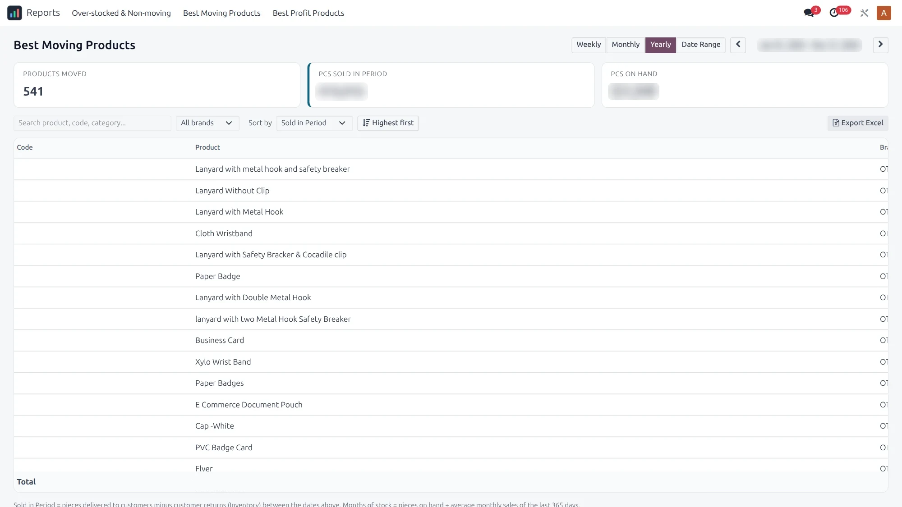

Captured from the real module on an anonymised copy of the database. Names are fictional, and confidential figures are blurred. Click any screen to enlarge it.
01
Over-stocked & non-moving: pieces on hand, stock value, sales in period and months of stock, by brand.
Stock & Profit Reports
02
Best moving products for the period, with stock on hand and months of cover.
Stock & Profit Reports

03
Best profit products: invoiced sales minus average purchase cost.